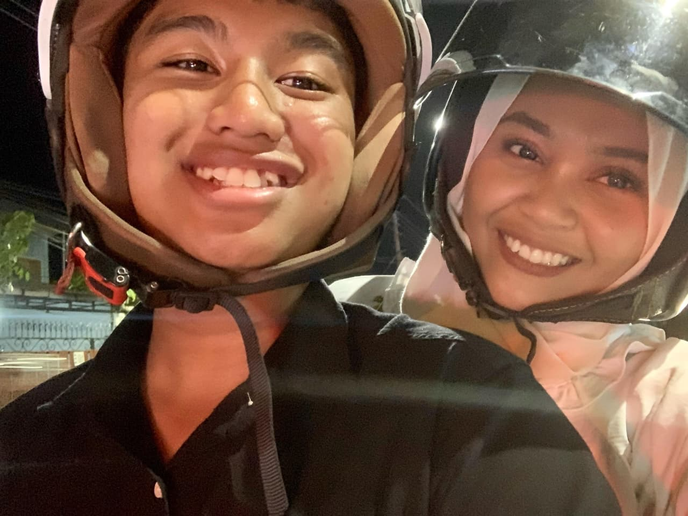
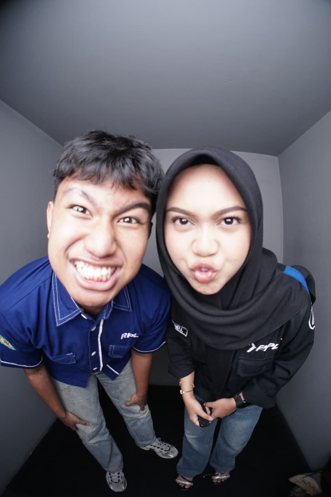
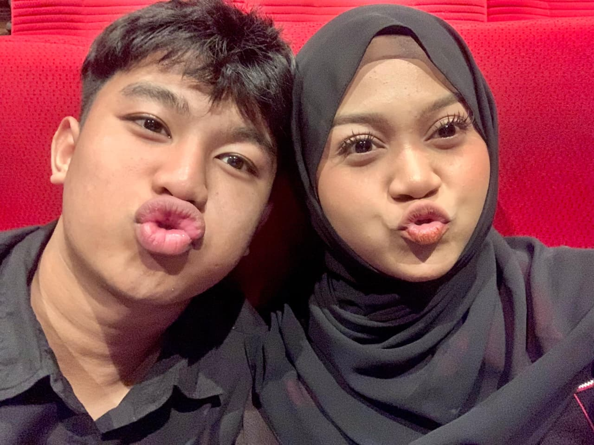
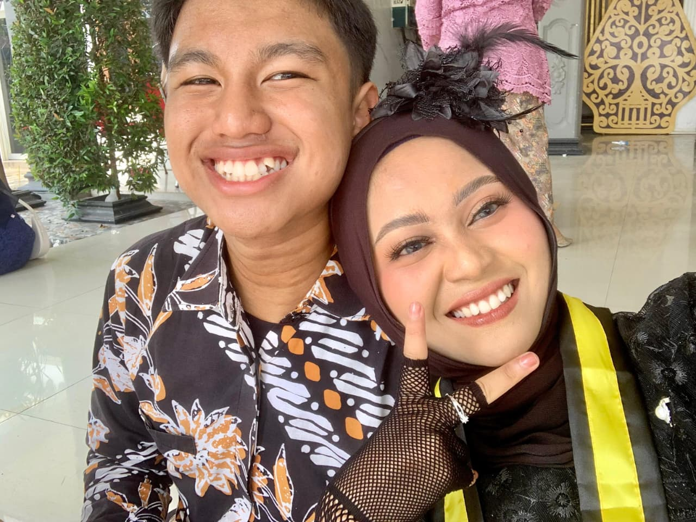
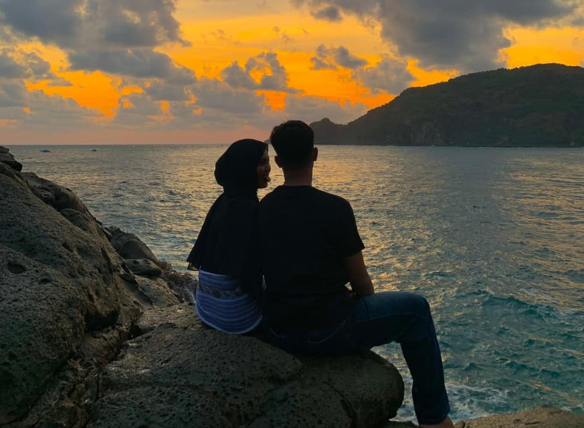
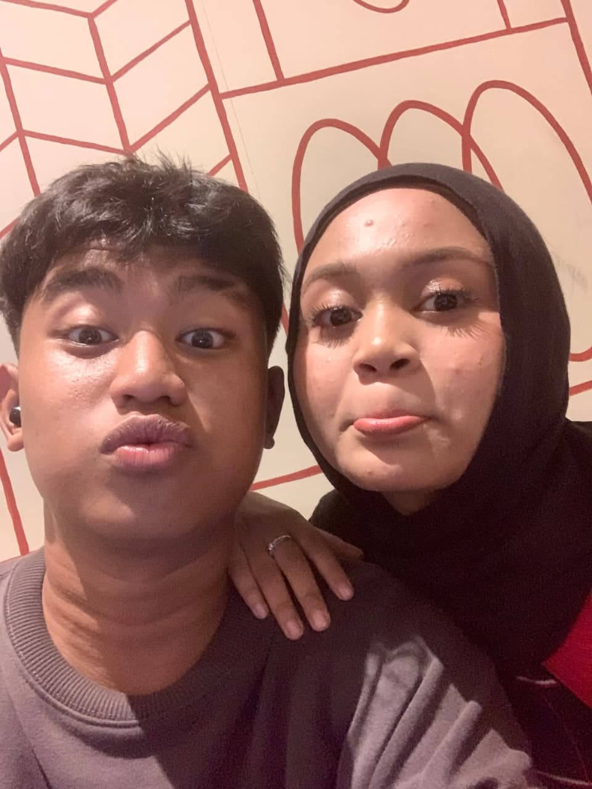

Berawal dari tempat PKL
Aku lebih dulu masuk ke software house tempat PKL kita. Tiga bulan kemudian, kamu datang. Kita sama-sama anak RPL, mulai dekat, ternyata cocok dan satu frekuensi. Plot twist PKL: malah cinlok, wkwkwk.
Happy 9 Months Anniversary, Sayang! Dari tempat PKL, jadi dua orang yang ternyata satu frekuensi. Siapa sangka cerita kecil ini bisa jadi seberarti ini? ♡
23 Januari 2026 · cerita kita dimulai
Website kecil ini aku bikin khusus buat kamu. Bukan hadiah paling mewah, tapi semoga bisa jadi tempat kecil untuk menyimpan cerita kita.
Aku lebih dulu masuk ke software house tempat PKL kita. Tiga bulan kemudian, kamu datang. Kita sama-sama anak RPL, mulai dekat, ternyata cocok dan satu frekuensi. Plot twist PKL: malah cinlok, wkwkwk.
Aku suka cara kamu bermanja ke aku. Kamu memang kadang gengsian, tapi justru momen saat kamu manja itu yang bikin aku gemas dan merasa spesial. Jangan gengsi terus ya, Sayang. Hehe ♡
Sembilan bulan cerita, tawa, belajar memahami, dan kenangan yang pengin aku simpan baik-baik.
Terima kasih sudah hadir di cerita hidupku. Semoga kita tetap punya ruang untuk tertawa, cerita apa saja, saling mendengarkan, dan menghargai hal-hal kecil dari satu sama lain.
Sejak 23 Januari 2026, ada waktu yang terus bertambah dan cerita yang masih bisa kita tulis.
dan hitungannya terus berjalan… semoga dipenuhi hal-hal baik, ya, Sayang. ♡
Momen indah yang diabadikan bersama.






Beberapa bab yang membuat perjalanan kita terasa istimewa.
Aku sudah lebih dulu PKL, lalu tiga bulan setelahnya kamu datang. Dari sering bertemu, ngobrol, sampai sadar ternyata kita nyambung dan satu frekuensi.
Tanggal yang sekarang punya tempat sendiri di kalender dan hati. Awal dari cerita yang kita jalani bersama.
Kamu jadi wanita pertama yang aku kasih bunga, dan kamu juga jadi orang pertama yang mengajakku punya pengalaman nonton bioskop berdua. Setelah itu kita makan mi ayam sambil bertukar cerita tentang masa lalu.
Setelah makan, kita muter-muter Kota Solo sampai malah nyasar ke Bengawan Solo. Agak malu kalau diingat, tapi justru itu yang bikin kenangan ini terasa lucu dan berkesan.
Terima kasih untuk semua momen yang sudah kita lewati. Semoga kita terus belajar memahami satu sama lain dan membuat kenangan baru.
Klik piringan hitam atau tombol untuk memutar lagu ♡
Daniel Caesar
♡ Klik di mana saja untuk mulai mendengarkan...
Ada sesuatu yang pengin aku sampaikan, dari hati aku sendiri.
Terima kasih sudah ikut menulis cerita ini bersamaku.